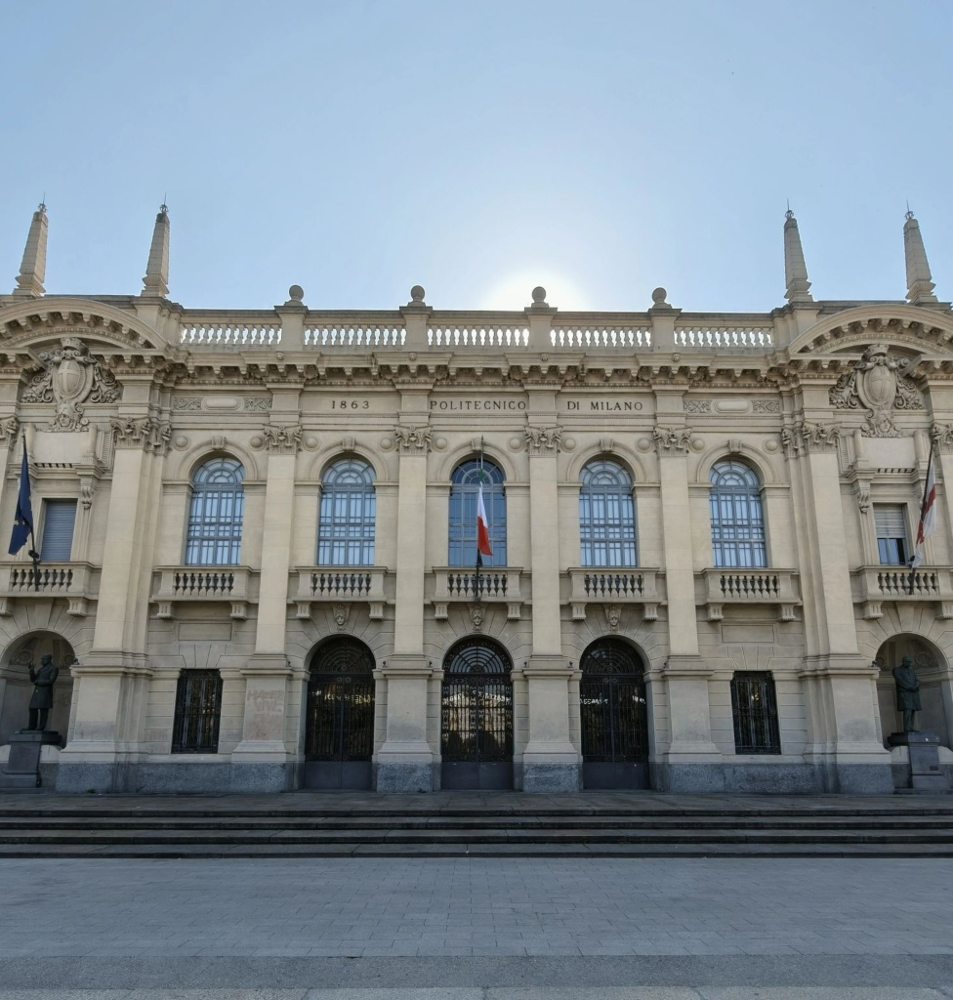
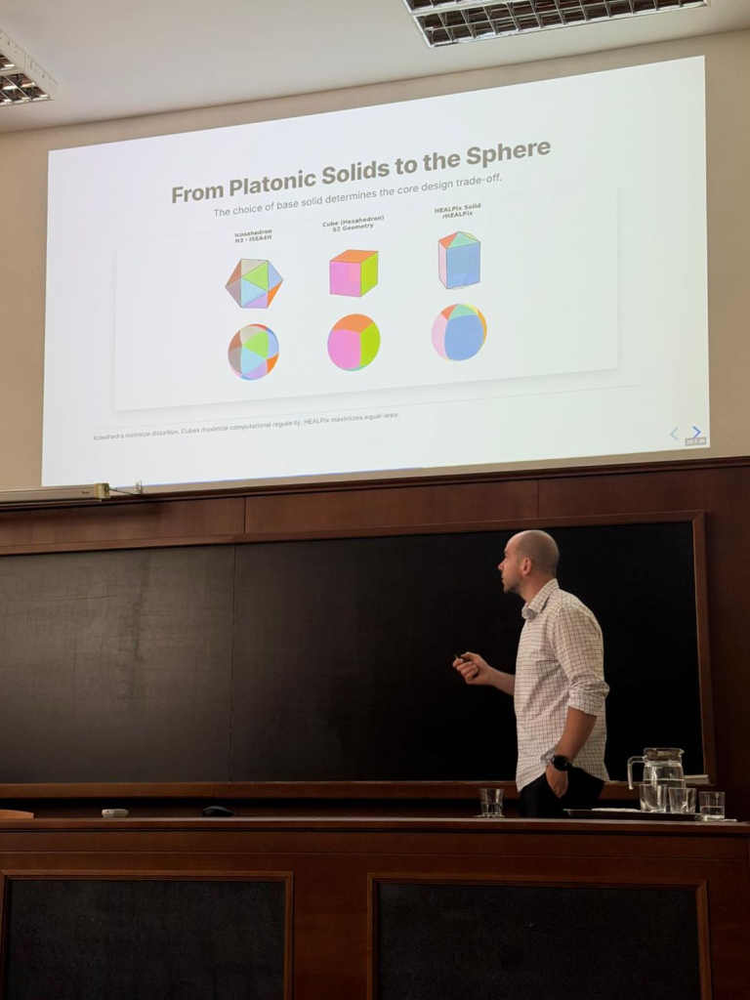
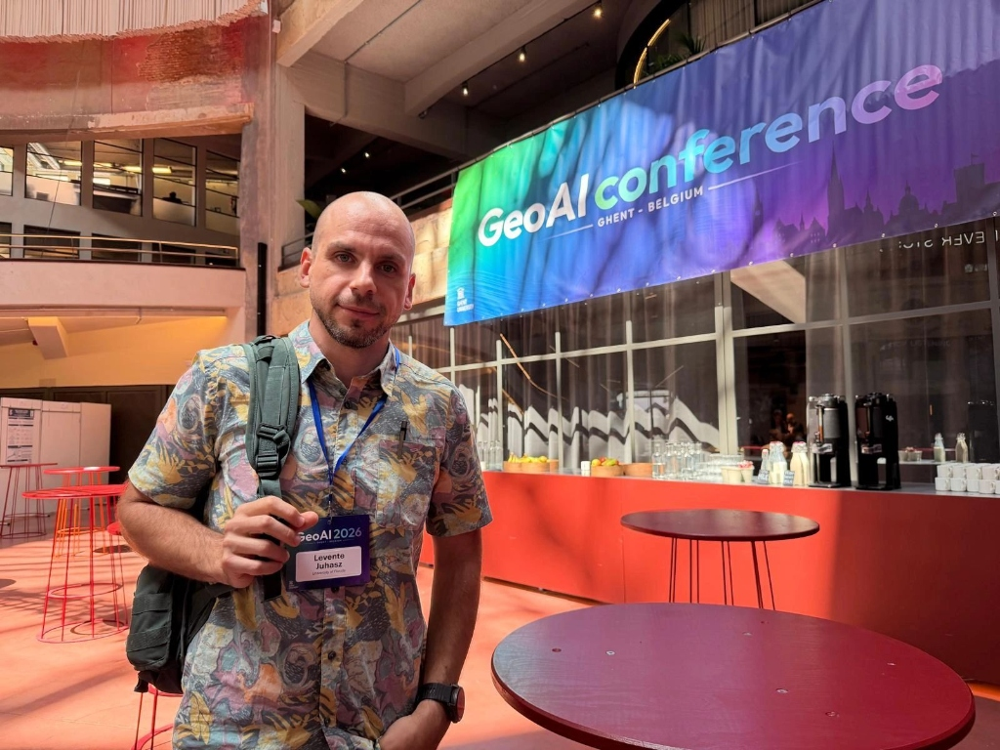
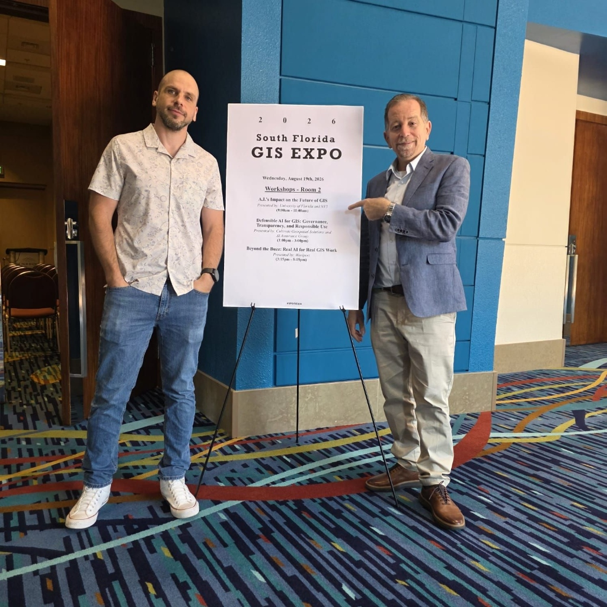

A Summer of Geospatial: Conferences, Workshops, and Community
Summer 2026 has been one of the most geographically and intellectually dynamic periods since the founding of the GATOR Lab. From invited research talks in Italy and Hungary, to great conferences in Belgium and Maryland, to a webinar organized by IJGI, and hands-on community workshops in Florida — it has been a busy and rewarding few months. Here’s a look back.
Invited Talks in Europe — Milano and Szeged
The summer kicked off with a trip to Europe in June for two invited research talks.
At the Politecnico di Milano in Italy, I had the opportunity visit GEOlab (Geomatics and Earth Observation laboratory) led by Prof. Maria Antonia Brovelli to present our ongoing work on autonomous spatial intelligence. Founded in 1863, the Politecnico is one of the premier technical universities in Europe. I have been long following the work of Prof Brovelli’s group and meeting them in person was very rewarding. Thank you for the hospitality!

From Italy, the trip continued to Szeged, Hungary, where I was invited to speak at the University of Szeged (Szegedi Tudományegyetem). This was a full circle moment as my geospatial career started at the University of Szeged with degrees in Physical Geography and Geoinformatics! Both talks centered on the same theme — “Toward Autonomous Spatial Intelligence” — exploring how the convergence of large language models, discrete global grid systems, and agentic AI is reshaping the geospatial landscape.

These European visits were a great reminder of how broadly this research community spans, and how much appetite there is internationally for rigorous GeoAI research. Meeting new friend and collaborators, and reconnecting with old friends was definitely worth the travel.
The First GeoAI International Conference — Ghent, Belgium
One of the highlights of the summer was attending and presenting at the inaugural GeoAI 2026 Conference in Ghent, Belgium in early June. As the first dedicated international conference for Geospatial Artificial Intelligence, it brought together researchers and industry professionals working at the frontier of spatial data science, LLMs, and autonomous GIS from around the world.

I presented a joint study on LLM spatial data generation, which I co-authored with Paddy Gorry and Peter Mooney from Maynooth Univesity Ireland. This paper builds on Paddy’s PhD work and investigates how well large language models can generate geographic data — and where they fall short. Read the paper in the proceedings here. Being part of the launch of GeoAI as a recognized conference venue feels significant. This is a community coming into its own, and the enthusiam of the attendees was real. I look forward to future editions of this conference.
IJGI Webinar: GeoAI — Prospects and Challenges
On June 30, I had the pleasure of participating in a webinar organized by the ISPRS International Journal of Geo-Information (IJGI), titled “GeoAI – Prospects and Challenges.”. The was created to bring together experts to discuss the latest developments, applications, and future directions of Geospatial AI. It was a fitting venue — given my recent recognition as the 2026 IJGI Young Investigator — to engage directly with the journal’s community. The session was small, and only featured one other talk by Junghwan Kim, Director of the Smart Cities for Good Lab at Virginia Tech whose doing some great work in the GeoAI domain.
UCGIS Symposium — College Park, Maryland
Later in the summer, I attended the UCGIS Symposium in College Park, Maryland, the annual gathering of the University Consortium for Geographic Information Science. This is a community I value deeply for its commitment to advancing GIScience education and research in the USA.
In addition to attending, I had the opportunity to co-host a hands-on workshop at the Symposium. The session titled “From Prompts to Protocols: Govering Agentic AI for Reliable Geospatial Programming” focused on geospatial web development using governed agents. This workshops was co-hosted with my long-time collaborators from Florida International University, Dr. Boyuan Guan and Dr. Wencong Cui, and was based on our joint publication titled “A Dual-Helix Governance Approach Towards Reliable Agentic Artificial Intelligence for WebGIS Development”, which was just accepted for publication (literally today) in Transactions in GIS so stay tuned for the final publication! ]https://arxiv.org/abs/2603.04390
South Florida GIS Expo Workshop — West Palm Beach
Back in Florida, I led a pre-expo training workshop at the South Florida GIS Expo in West Palm Beach on August 19. The session, “AI’s Impact on the Future of GIS,” was a two-hour hands-on experience for GIS practitioners, with live demonstrations using a Google Colab notebook, applying semantic place classification to real data from the West Palm Beach area using LLM-powered tools built on top of the UF NaviGator Toolkit API.

It was a practical, applied session — the kind of event I find particularly rewarding because it connects academic research directly to the professional geospatial community. In turn, I get to learn about what GIS folks are interested in these days, which is always a useful input for training the next generation of GIS professionals. The South Florida GIS community is active and engaged, and the Expo is always a great venue for that kind of dialogue.
FSMS Event — Miami
Rounding out the summer closer to home, I also participated in an event organized by the Florida Surveying and Mapping Society (FSMS) in Miami, presenting at the Miami-Dade chapter meeting hosted at Miami Dade College. These local engagements are important — they keep the lab connected to the broader Florida geospatial profession and create pathways for students and practitioners to engage with cutting-edge research.
Looking Ahead
It has been a genuinely full summer. Across all of these events, a few themes kept surfacing: the growing recognition of GeoAI as a distinct and important subfield, the critical importance of spatial data quality, and the need for infrastructure — both technical and conceptual — that makes geospatial AI geometrically rigorous rather than geometrically naive.
The GATOR Lab is heading into Fall 2026 with new students, active manuscripts, and a lot of momentum. More to come soon.